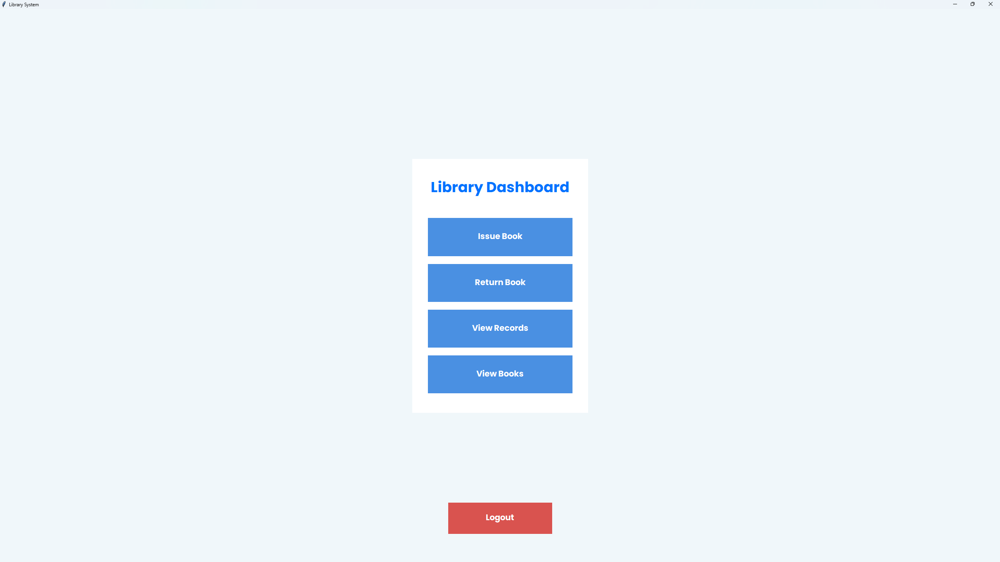
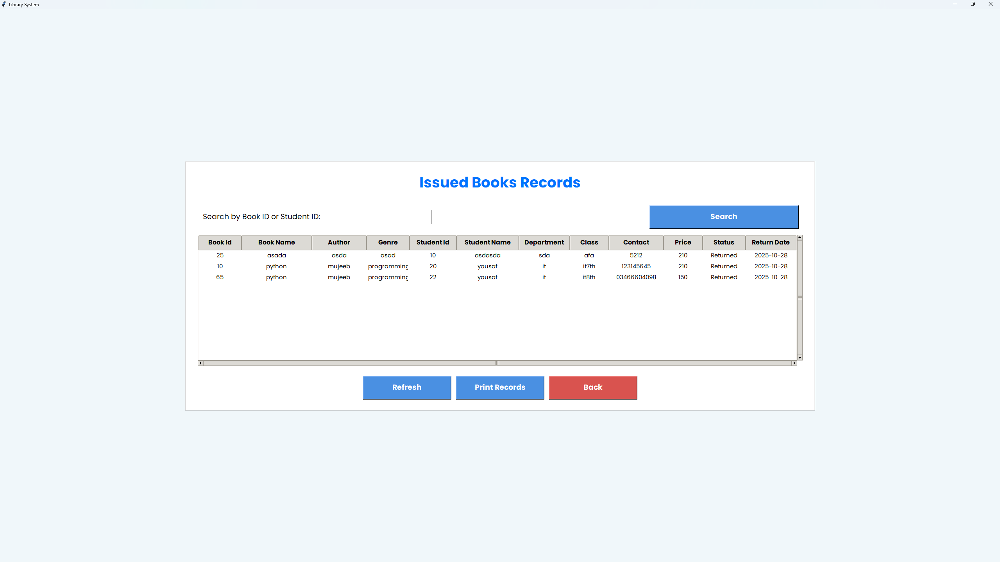
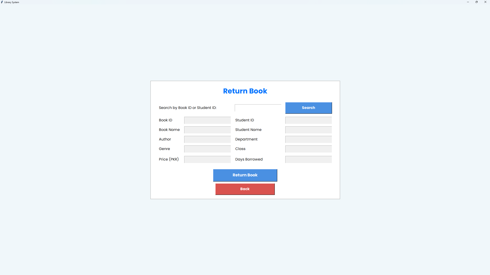

What It Does
- Books CRUD (title, author, ISBN, total & available copies)
- Members CRUD (name, email) with uniqueness checks
- Issue/Return workflows with auto stock decrement/increment
- Overdue detection + fine calculation on return
- Dashboard with quick stats & recent loans
- Search & simple filters for books/members
Why I Built It
To practice real-world CRUD patterns, normalized relational design, and clean separation between models, forms, and views — then wrap it in a modern, cinematic UI suitable for a professional portfolio.
Tech Stack
- Django (models, forms, admin, messages)
- SQLite by default; optional MySQL configuration
- Tailwind (CDN) for dark + glass aesthetics
- Vanilla templates with reusable base layout
How to Run
- Create and activate a virtual environment
pip install -r requirements.txtpython manage.py migrate- (Optional)
python manage.py createsuperuser python manage.py runserver
MySQL instructions are commented in settings.py.
Screenshots



Highlights & Learnings
- Atomic stock updates during issue/return (avoid race conditions)
- Simple, readable model methods (
Loan.mark_returned()) - Reusability via base template + message toasts
- Clear UX for destructive actions (confirm modals/flows)
Repository
View Source Code →
Browse models, views, and Tailwind templates.
Live Demo
Open Deployed App →
Try issuing a book and returning it to see fines.